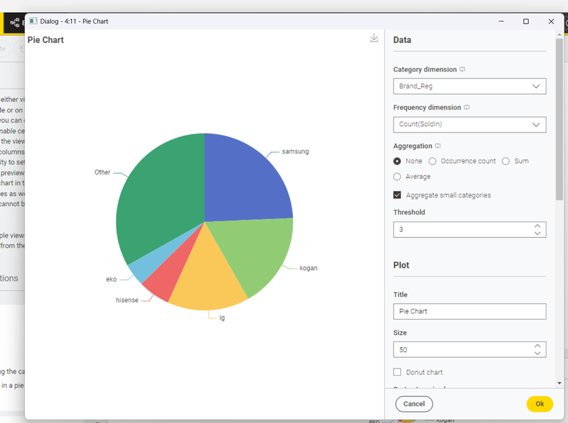
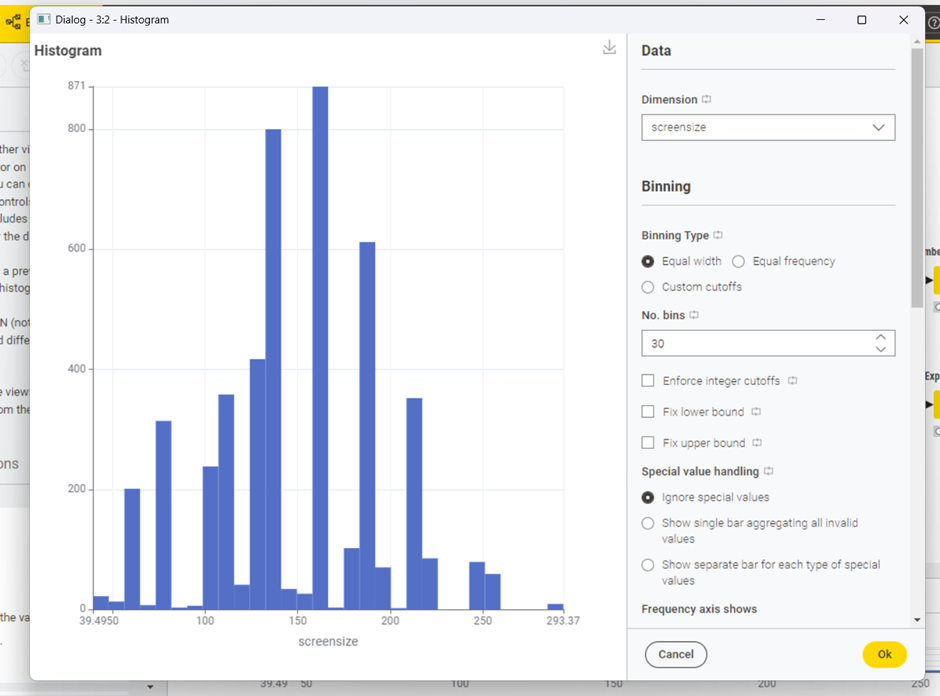

Do You Know What TV Size Actually Suits Your Home?
Most consumers choose a television size purely based on room dimensions or sales budgets, without considering ongoing power bills. Understanding the link between screen size, display technology, and annual electricity use is key to making an informed long-term choice.

Demonstrate Issue: The Market Landscape
While 55" to 65" TVs from major brands like Samsung represent the bulk of consumer options, purchasing choices remain largely dictated by size, price, and visual appeal rather than energy efficiency.


Describe the Approach: Analyzing Size vs. Consumption
If consumers can visualize how power demand shifts across different screen dimensions, they can anticipate utility expenses prior to purchasing. Plotting screen size directly against yearly energy consumption (kWh/year) highlights a persistent upward trend: physical screen expansion substantially drives up annual electricity requirements.

Show the Evidence: The Size Tier Multiplier
Grouping television models into Small, Medium, and Large categories reveals that energy usage approximately doubles across each tier jump. Purchasing a larger screen not only incurs a steeper upfront retail cost, but also permanently increases household operational overhead every year.

Technology Matters Too: Display Panel Architecture
Screen dimensions alone do not tell the complete story. Differing display panel technologies—including conventional LCD, LED-backlit LCD, and OLED—exhibit distinct operational energy characteristics even when comparing identical screen sizes.

Recommendation: Sustainable Home Entertainment
Before settling on a new television, evaluate whether the screen size truly matches your seating distance and living room layout. Checking both certified Energy Star ratings and panel backlighting types ensures you achieve optimal picture quality without unneeded inflation to your yearly electricity bills.